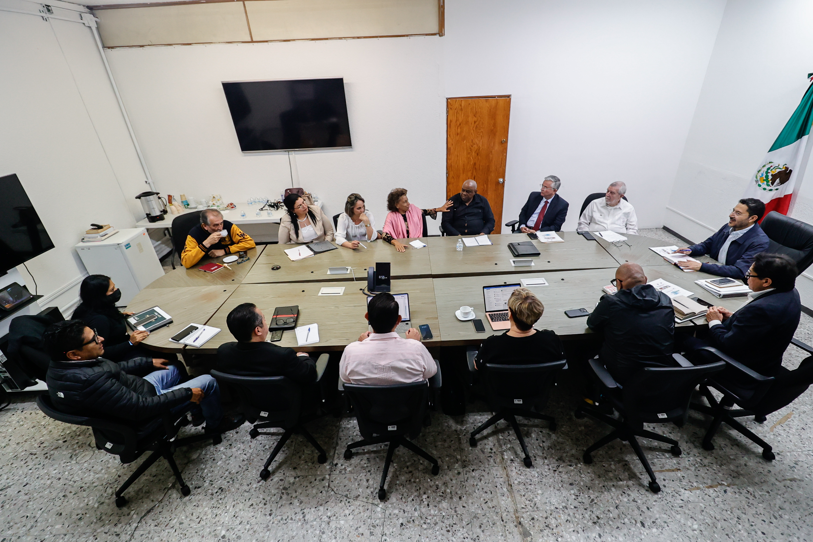
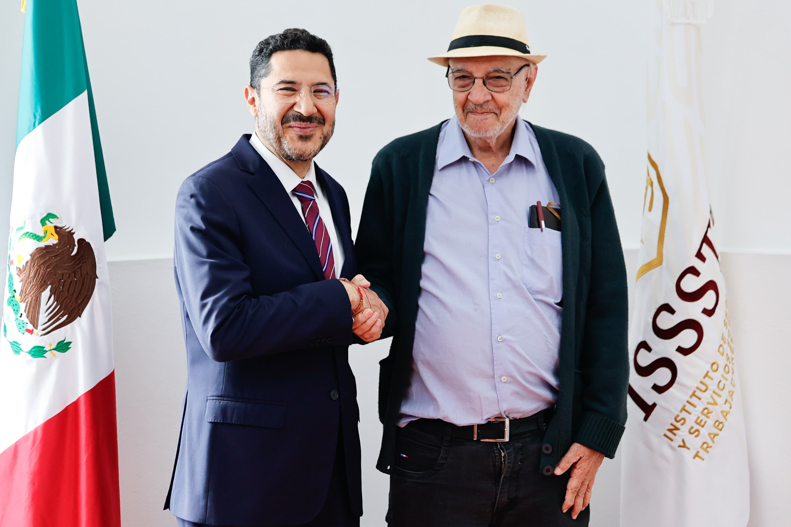
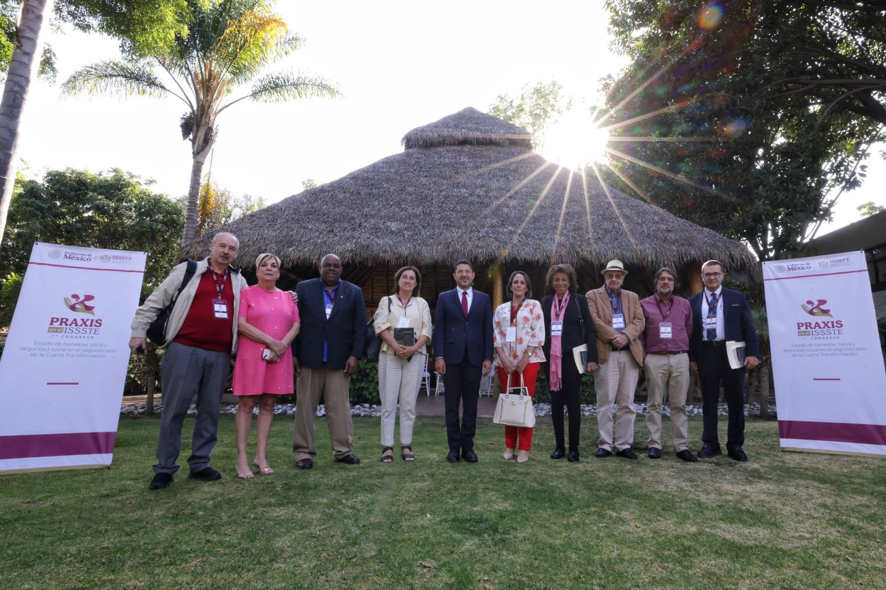

Invitados Internacionales
Dra. Graciela Z. Rosso
Argentina
Dr. Pastor Castell-Florit
Serrate, Cuba
Dr. Carlos Montaño
Uruguay
Dr. Marcos Roitman
Rosenmann, España
Estela de los Ángeles
Gispert Abreu, Cuba
Dr. Emir Sader
Brasil
Dra. Liz Odelnis Cruz
Medico cubana en México
Inauguración y Clausura
Inauguración Primer Congreso Praxis
Ver fotos
Clausura Primer Congreso Praxis
Ver fotos
Conferencias Del Congreso
Articulación de los saberes científicos
y la acción política.
Dr. Carlos Montaño, Uruguay
Ver fotos
Reconstrucción y desarticulación de los derechos sociales en Argentina.
Dra. Graciela Rosso, Argentina
Ver fotos
La reconstrucción posneoliberal y el Estado de Bienestar Social en Brasil
Dr. Emir Sader, Brasil
Ver fotos
Destrucción neoliberal y reconstrucción de los derechos sociales en México.
Dr. Martí Batres Guadarrama, Director General
Ver fotos
El rol de los intelectuales
en un Estado de Bienestar
Dra. Juana E. Suárez Conejero, ISSSTE
Ver fotos
Pautas para deconstruir la ideología neoliberal como sentido común y socialconformismo
Dr. Marcos Roitman Rosenmann, España
Ver fotos
Mesas Del Congreso
Rutas para el
bienestar
Ver fotos
Participación ciudadana: ejes articuladores del Estado de Bienestar
Ver fotos
La mujer como agente transformador en el Estado de Bienestar
Ver fotos
Actividades Complementarias
Curso Neoliberalismo y Control Social Parte I Dr. Marcos Roitman
Curso Neoliberalismo y Control Social Parte II Dr. Marcos Roitman
Curso La Reconstrucción del Estado de Bienestar Posneoliberal Parte I Dr. Emir Sader
Curso La Reconstrucción del Estado de Bienestar Posneoliberal Parte II Dr. Emir Sader
Mesa De intelectuales
Dra.Graciela Rosso, Dra. Estela de los Ángeles Gispert, Dr. Pastor Castell
Mesa de Trabajo: Experiencia de Sistema de Salud Cubano
Ver fotos
Noticias


